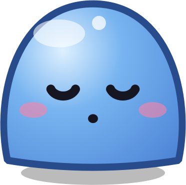
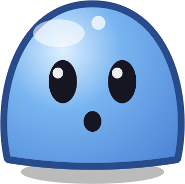

Musik
Lagu dari Spotify, YouTube, atau pemutar apa pun langsung muncul. Liriknya bergulir pas dinyanyiin, Ongol ikut joget.
- Lirik karaoke
- Play, skip, seek
- Cover lagu
Ongol mengubah bagian atas layar Windows jadi notch interaktif. Lagu dan liriknya, cuaca, jadwal, timer fokus, screenshot, sampai asisten suara, semua nongol pas kamu butuh.
Dari kerja pagi sampai dengerin lagu malam-malam. Ongol nongol pas ada yang penting, terus balik diam.
Lagu dari Spotify, YouTube, atau pemutar apa pun langsung muncul. Liriknya bergulir pas dinyanyiin, Ongol ikut joget.
Timer fokus 25 menit, jadwal hari ini, dan pengingat sebelum meeting. Tiap sesi selesai, Ongol naik level.
Screenshot dan rekam layar tanpa aplikasi lain, laci buat nitip file, dan clipboard yang ingat lima salinan terakhir.
Bilang "Hai Ongol" buat minta tolong. Cuaca dari Lokasi Windows, notifikasi chat, volume, dan baterai, semua lewat atas.
Dia ngantuk kalau ditinggal, kaget pas kamera nyala, keringetan kalau CPU kerja keras. Suaranya juga khas: sedikit blub, sedikit slime.
Kursor menjauh 5 detik, Ongol ngintip dari notch, ngelirik kursor, lalu ketiduran. Detiknya bisa diatur.


Pas gak ada apa-apa, Ongol tidur. Fitur berat cuma nyala kalau kamu nyalain. Coba nyalain di bawah, lihat toplesnya keisi.
Diukur di laptop Windows 11 setelah 1 menit diam. Angka bisa beda di laptop lain.
Satu file, gratis, tanpa akun, tanpa hak admin.
SHA-256 buat ngecek keaslian file:7d72985b8c41806dd32ab6c311c49cad29c2984a0e3da90f6eaf766974763fd2
Ongol dibikin di Indonesia. Semua fitur bisa dipakai tanpa bayar. Kalau Ongol bikin harimu lebih enak, kasih Support biar update berikutnya cepat jadi.
Support sifatnya sukarela dan gak membuka fitur apa pun.
Nemu bug, punya ide fitur, atau sekadar mau cerita. Semua masukan dibaca.
Ceritain apa yang terjadi, versi Windows, dan kalau bisa sertakan screenshot.
Buka formulir → Usul fiturPengen Ongol bisa apa lagi? Tulis idenya, nanti bisa di-vote orang lain juga.
Buka formulir → Lihat masukan lainCek dulu, siapa tahu bug atau ide lo udah ada yang nulis. Tinggal kasih 👍.
Lihat semua →Masukan ditulis di GitHub Issues. Perlu akun GitHub gratis.
Iya. Semua fitur bisa dipakai tanpa bayar dan tanpa akun. Support sifatnya sukarela.
Windows memperingatkan semua aplikasi baru yang belum punya sertifikat tanda tangan berbayar. Cocokkan kode SHA-256 di bagian unduh dengan file yang kamu dapat. Ongol tidak mengumpulkan data pribadi.
Semua yang muncul di kontrol media Windows: Spotify, YouTube atau YouTube Music di browser, Apple Music, VLC, dan lainnya.
Lirik diambil dari LRCLIB, database lirik gratis. Kalau lagunya belum ada di sana, Ongol bilang liriknya belum ketemu.
Gak. Perintah dasar (buka aplikasi, timer, cuaca, catatan, screenshot) jalan tanpa API key. Buat jawaban yang lebih pintar, kamu bisa masukin API key Claude di Pengaturan, Asisten.
Bisa. Di Pengaturan, Tampilan, pilih mode sembunyi: notch ilang total dan baru muncul pas kursor ke tepi atas.
Belum. Ongol saat ini khusus Windows 10 dan 11.
Buka Pengaturan Ongol, tab Sistem, klik Uninstall Ongol. Kamu bisa pilih simpan level dan pengaturan buat nanti, atau hapus semuanya.
Buka m-banking atau e-wallet, pilih Scan/Bayar, arahkan ke kode ini. Nominal bebas.